CS184/284A Spring 2025 Homework 2 Write-Up
Name: Jinkang Fang
Link to webpage:
cal-cs184-student.github.io/hw-webpages-avooocado/
Link to GitHub repository:
github.com/cal-cs184-student/sp25-hw2-dragonfruit
Overview
Give a high-level overview of what you implemented in this homework. Think
about what you've built as a whole. Share your thoughts on what
interesting things you've learned from completing the homework.
Section I: Bezier Curves and Surfaces
Part 1: Bezier curves with 1D de Casteljau subdivision
A Bezier curve is a curve generated by interpolating between a series of
points, called "control points." One way of evaluating them
computationally is with the de Casteljau subdivision algorithm.
The de Casteljau's algorithm applies 1D lerp to each consecutive pair of
control points, and it does so recursively with each subdivision until we
arrive at one point. Evaluating this algorithm on many \(t\) values yields
a batch of points on the curve, which we can then chain together with
straight lines to approximate the visual of the Bezier curve.
|
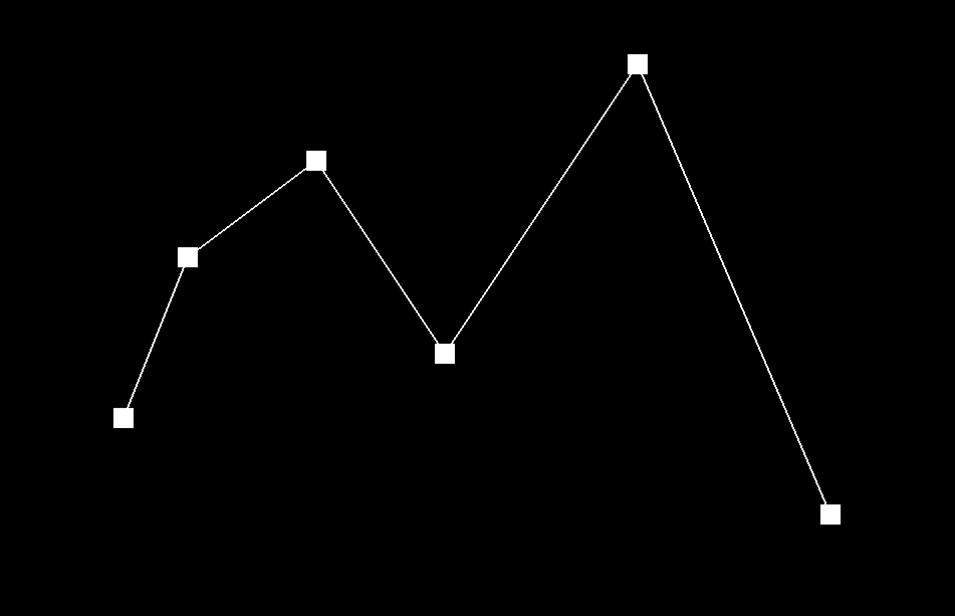
Control points only.
|
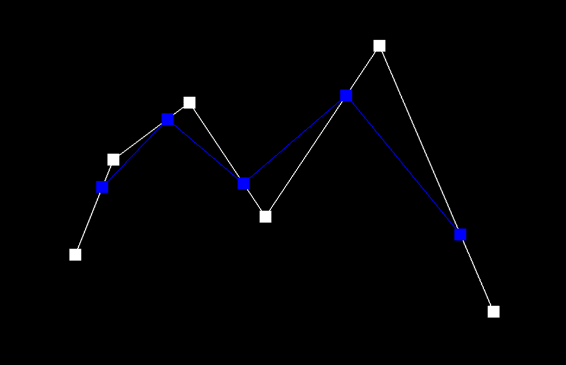
Step 1.
|
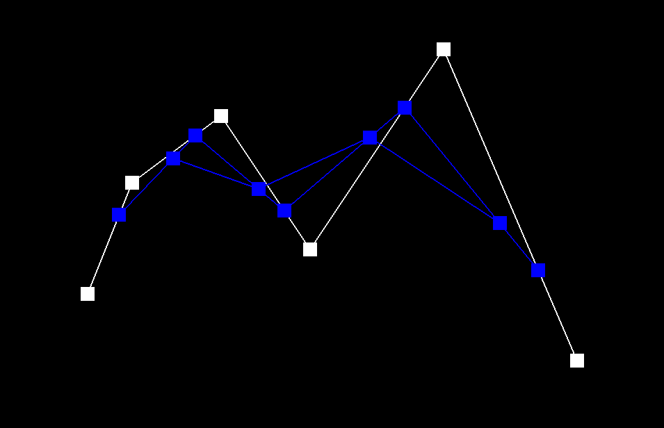
Step 2.
|
|
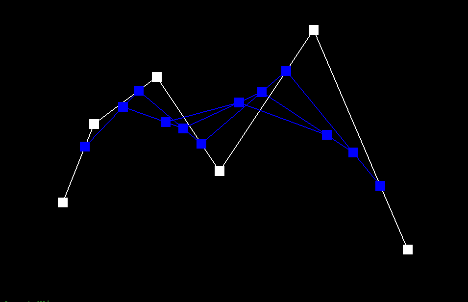
Step 3.
|
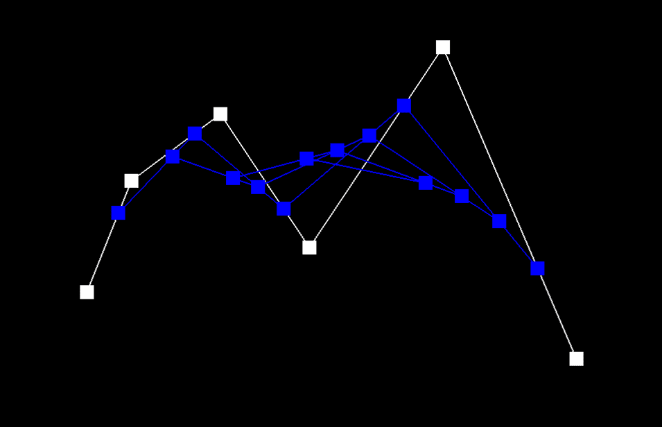
Step 4.
|
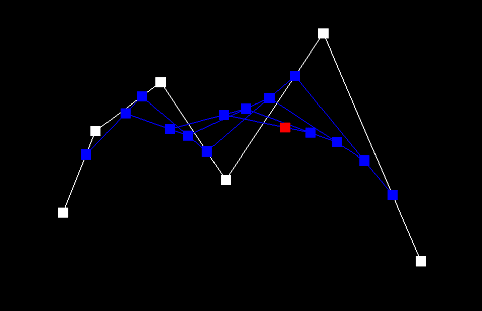
Step 5.
|
|
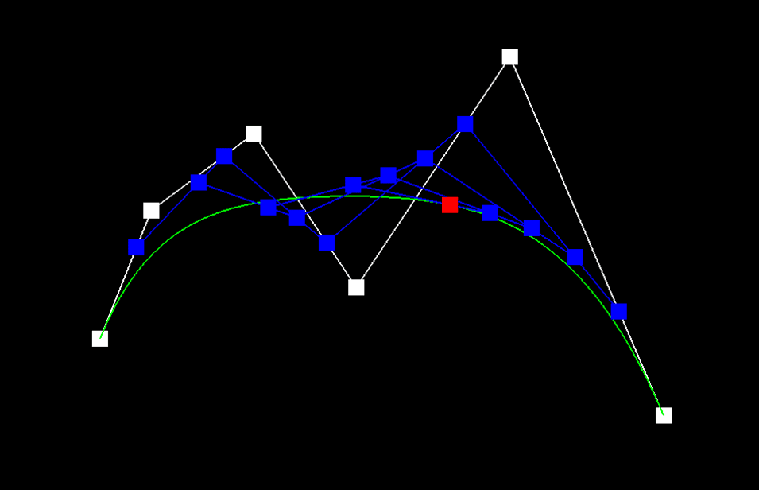
With final curve.
|
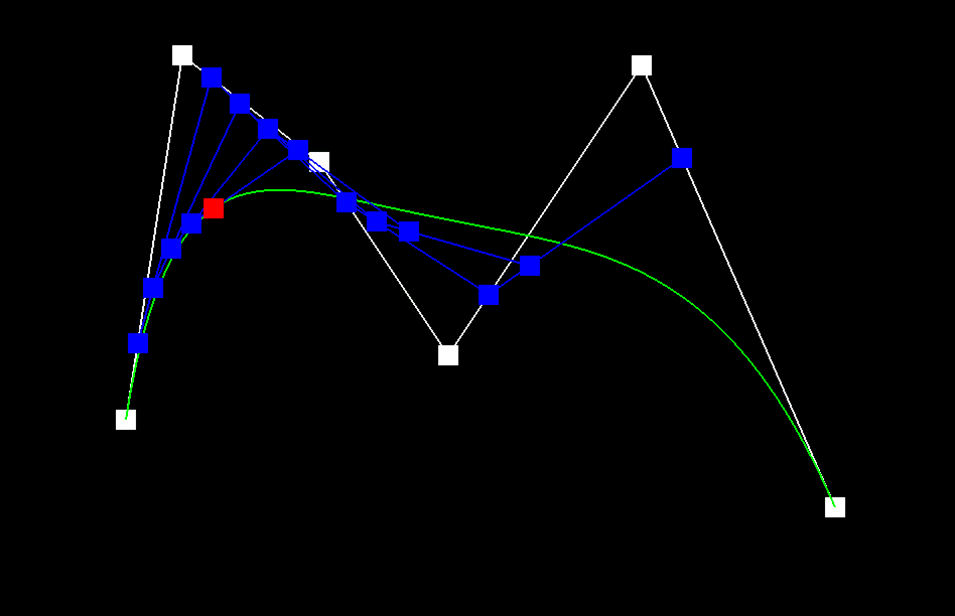
Different control point and \(t\).
|
Part 2: Bezier surfaces with separable 1D de Casteljau
Bezier surfaces are composed of rectangular patches of control points.
When pieced together, they can create complex, curved structures, like the
teapot shown below.
To evaluate Bezier surfaces, we first need to figure out how to evaluate
Bezier patches. To begin, we can apply the de Casteljau algorithm on each
"row" of the control points, parameterized by some \(u\) in the range
\([0,1]\). Doing this yields a new set of intermediate control points that
we can conceptualize as a "column." Applying de Casteljau one more time on
this "column" of control points parameterized by \(v\) (also in the range
\([0,1]\)) gives us an evaluated point. Using this method, we can evaluate
any point on a Bezier patch. Of course, without loss of generality, it
doesn't really matter which orientation is the "row" or the "column," both
ways will work.
Using this method, we can apply this to all patches of a Bezier surface to
compose a mesh, which is composed of triangles, which we can rasterize
optimally.
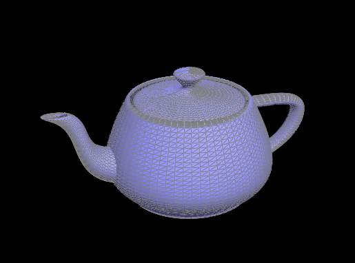
Section II: Triangle Meshes and Half-Edge Data Structure
Part 3: Area-weighted vertex normals
An area-weighted vertex normal is a type of vertex normal where its
direction is influenced by the area of the faces that the vertex is a part
of, good for shading computations.
To compute it, we can first consider finding the normals of the vertex's
surrounding faces. Definitionally, a face's normal is a vector
perpendicular to the face at any point. One way we can compute this is
simply taking the cross product of two sides of the face. Consequently,
the area of the face is exactly half the magnitude of this cross product,
making it area-weighted by default! Therefore, we can simply sum the
area-weighted normals of each neighboring face, then normalize that sum to
obtain the area-weighted vertex normal.
Since we are using the halfedge data structure, we can easily traverse
neighboring faces from a given vertex using a do-while loop. In fact, we
don't even need to reference the face itself, we just need to get the
vertices of the neighboring faces for the computation. Here's a simple
description of the traversal: starting from a halfedge that points out
from the given vertex, keep going around in a circle to find the vertices
of the neighboring faces until we end back at the start.
Using area-weighted vertex normals, we can apply Phong-shading
calculations to achieve a smooth shading effect on our teapot.
|
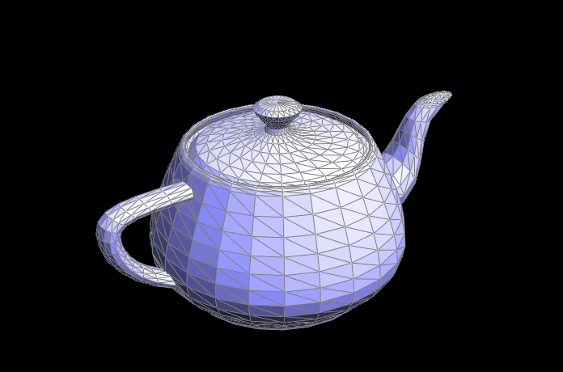
Without vertex normal.
|
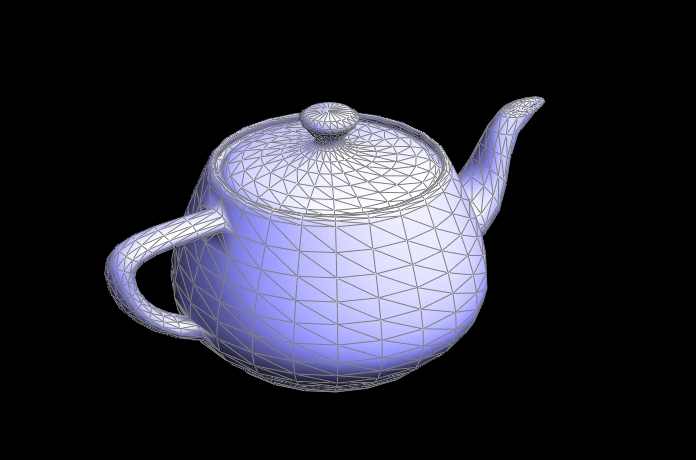
With vertex normal.
|
Part 4: Edge flip
Edge flips require a lot of careful pointer reassignments. But, that's all
there is to it, just reassignments. It's easy to do if you draw a before
and after diagram of the edge flip operation, labeling every mesh element:
halfedge, edge, face, and vertex. After that, it's just making sure that
edges, faces, and vertices have the right halfedge reassigned, and that
halfedges have the right next, twin, vertex, edge, and face pointers
reassigned.
One implementation trick is to first assign a variable to each mesh
element by traversing the halfedge datastructure and name it as you have
done in the diagram. This just makes the reassignment step much easier.
|
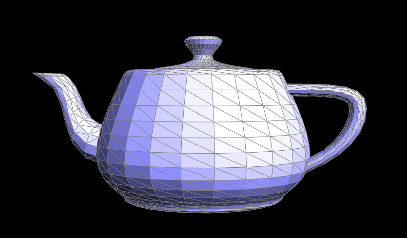
Before edge flips.
|
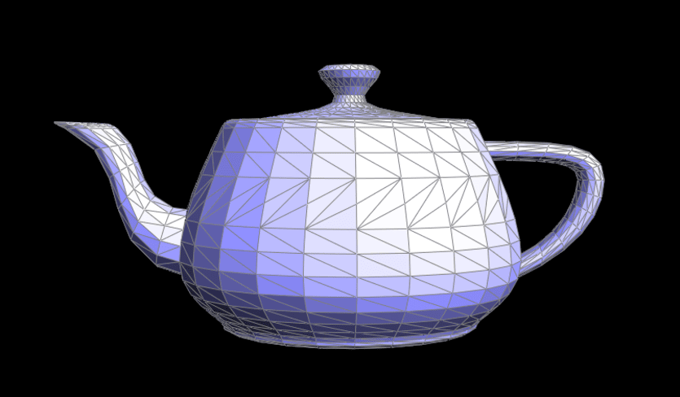
After edge flips.
|
Part 5: Edge split
Edge splits are implemented similarly to edge flips, since both only
require reassignments to mesh element pointers. The only difference here
is that edge splits involves creating new mesh elements. That said, we can
employ the same technique used last time of drawing a diagram, naming
variables, and assigning each property accordingly. This works because we
can assume that pointers are assigned correctly and in a consistent manner
(i.e. same rotation). So, as long as we maintain that state, we can
generalize the pointer assignments to the diagram.
|
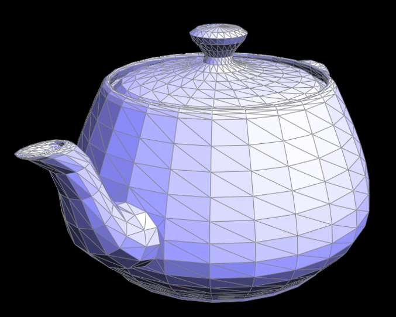
Before edge splits.
|
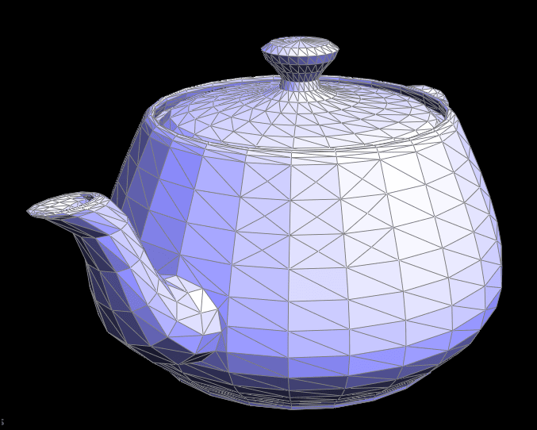
After edge splits.
|
|
Before flips and splits.
|
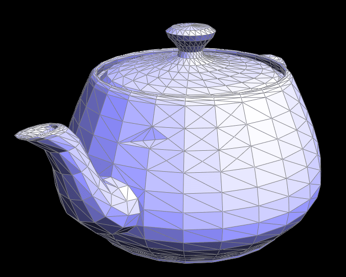
After flips and splits.
|
Another part where edge splits differ from edge flips is that it can work
on boundary edges.
|
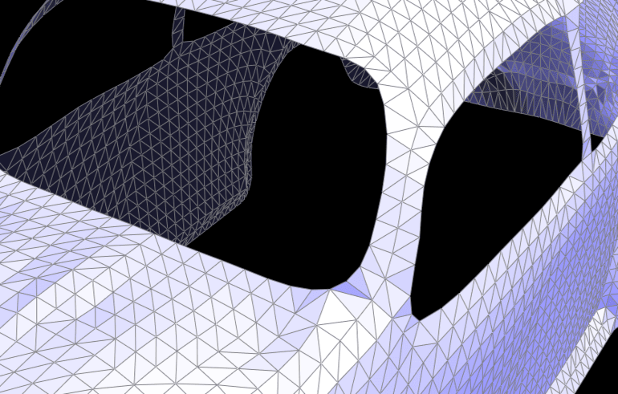
Before edge splits.
|
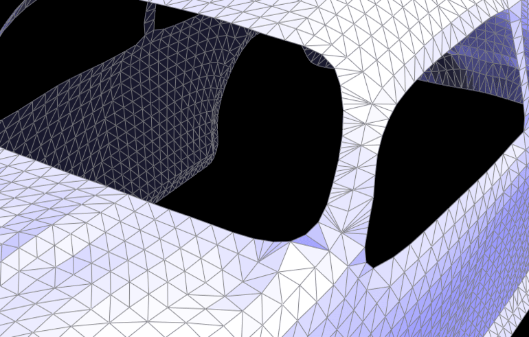
After edge splits.
|
Part 6: Loop subdivision for mesh upsampling
When implementing loop subdivision, it's easier to first compute (but not
update) the new vertex positions for both original vertices and the new
ones that will be born at the midpoint of edges as a result of edge
splits. Then, we can subdivide by splitting all original edges then
flipping every new edge that connects a new vertex with an old vertex.
Finally, we can go ahead and update the positions of the vertices.
It's important to note that existing edges are cut in half after an edge
split, and its other half should be handled carefully. First, it should
not split again, so it should be grouped as a "new edge" in this sense.
That said, it should also not be flipped, because it's technically part of
the "old edge" as well. The approach that I employed is to not count it as
a new edge, and only iterating on a list of original edges, which we can
build as we compute the new positions for midpoint-bound vertices.
After upsampling, meshes generally become smoother and less jagged.
However, this can also be an unfortunate side effect for some sharp edges
that we intend to keep, like in the case of a cube. As seen in the example
below, upsampling can crumble the intended shape of the object.
|
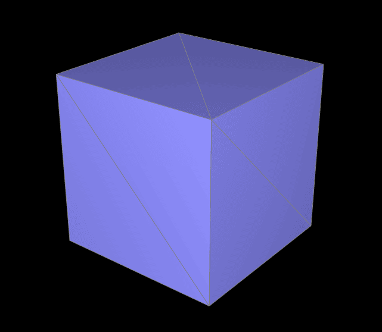
Before upsampling.
|
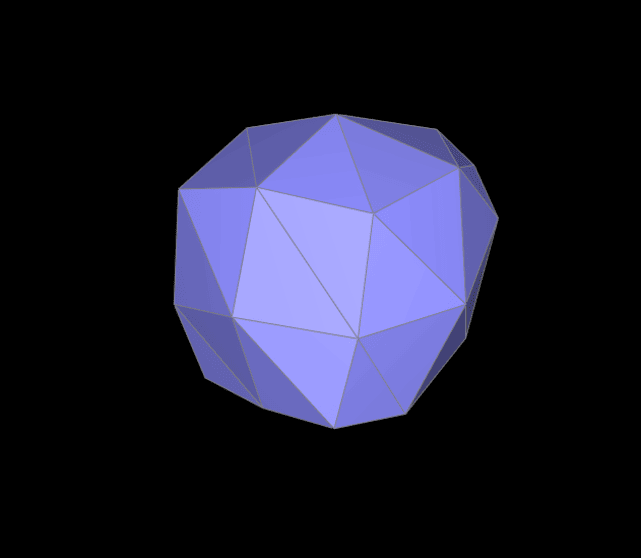
After upsampling.
|
It does seem that splitting the edges before upsampling can help maintain
the structure a bit better though.
|
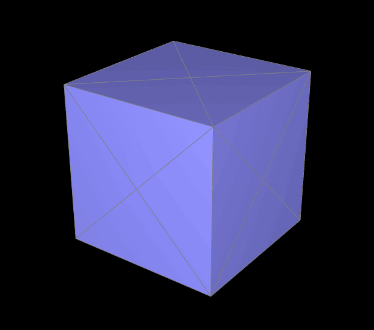
Edge-split cube, before upsampling.
|
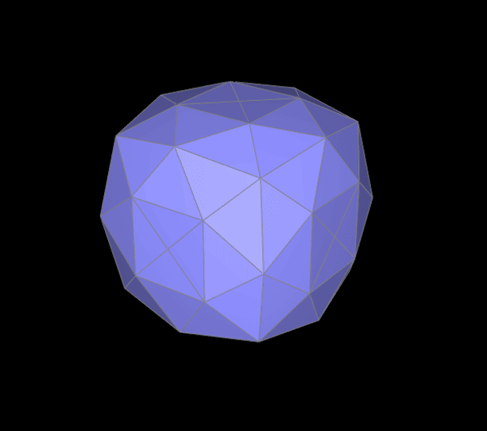
Edge-split cube, after upsampling.
|
If we apply more splits strategically, the shape of the cube seems to
retain better after upsampling.
|
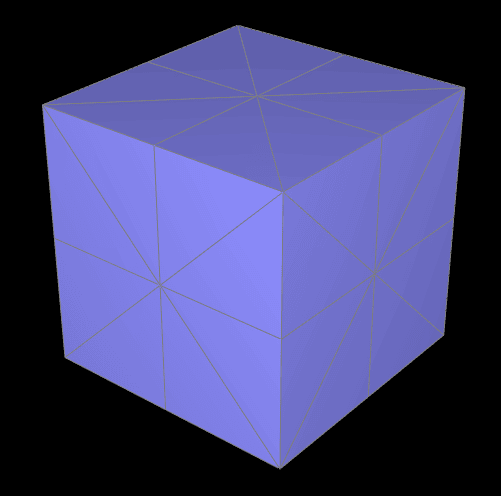
Before upsampling.
|
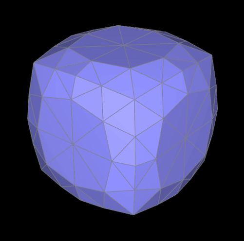
After upsampling.
|
This is likely because the added splitting creates more triangles, which
give the cube more structure, preventing it from being lost to the
upsampling process.